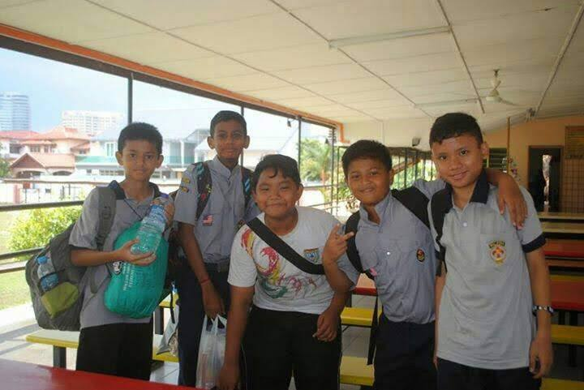

My Education


I began studying at Sekolah Kebangsaan Damansara Utama, popularly known as SKDU, when I was seven years old. It is usually the first stage of formal education, following preschool/kindergarten and preceding secondary school. This is the nearest school to my residence. As a result, this might make it easier for me and my parents to send me to school on a regular basis.
The next education that I further my studies in secondary school is SMK Bandar Utama Damansara (2), also known as SMK BUD (2). I started at this school at the age of 13 and finished my secondary school at the age of 17 by successfully taking and receiving results for the SPM test, which is the Malaysia Certificate of Education and is required for future education3.
Finally, I received an opportunity to continue my studies at UiTM Rembau Campus. There are numerous topics I learn and explore at this university which is Universiti Teknologi MARA (UiTM). In a few weeks, I will complete my Diploma in Information Management and graduate. I've been at this institution for two and a half years, and in shaa Allah, I'll continue my study to the next level, which is a degree.
Visit UiTM Rembau!
Click "Visit UiTM Rembau!" to receive the URL to Universiti Teknologi Mara Cawangan Negeri Sembilan Kampus Rembau's website!
Click "Visit UiTM Rembau!" to receive the URL to Universiti Teknologi Mara Cawangan Negeri Sembilan Kampus Rembau's website!